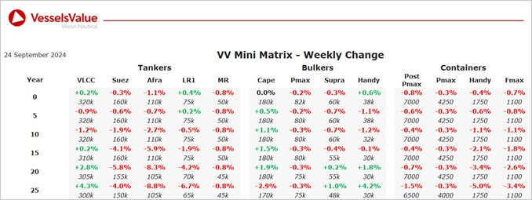

Bulkers:Bulker values have remained mostly stable this week
Panamax BC Dias (74,700 DWT, Jul 2001, Hudong Zhonghua) sold DD Due to Unknown Chinese buyers for USD 6.8 mil, VV Value USD 7.48 mil
Ultramax BC Queen Sapphire (61,400 DWT, Dec 2011, Iwagi Zosen) sold to Unknown Chinese buyers for USD 21 mil, VV Value USD 21.16 mil
Handy BC Yochow (34,400 DWT, Apr 2015, Namura) sold to Undisclosed buyers for USD 19 mil, VV Value USD 19.80 mil
Tankers:A decrease observed last week for older tonnage Tanker values
Aframax Planet Pearl (105,700 DWT, Sep 2005, Sumitomo) sold to Unknown Malaysian for USD 29 mil, VV Value USD 29.91 mil
MR2 (Chem/Prod) Caribbean Star (46,400 DWT, Jan 2004, Shin Kurushima Onishi) sold to undisclosed buyers for USD 17.9 mil, VV Value USD 17.77 mil
Containers:Container values remain mostly stable this week, with older tonnage showing a few declines
Handysize Turkon Istanbul (1,850 TEU, 2008, Sedef) sold to Greek buyers for USD 16.5 mil, VV Value USD 14.1 mil
Feedermax Melanesian Chief (1,118 TEU, 2008, Jinling Shipyard) sold to NSC Schifffahrtsgeselshaft for USD 9.4 mil, VV Value USD 10.1 mil
